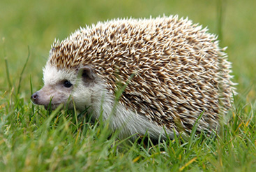

Примеры нумерованного HTML списка
Изменяем тип нумерованного HTML списка
- Первый элемент списка
- Второй элемент списка
- Третий элемент списка
Используем для нумерации большие римские цифры
- Первый элемент списка
- Второй элемент списка
- Третий элемент списка
Используем для нумерации заглавные латинские буквы
- Первый элемент списка
- Второй элемент списка
- Третий элемент списка
Используем для нумерации строчные латинские буквы
- Первый элемент списка
- Второй элемент списка
- Третий элемент списка
Используем для нумерации строчные римские цифры
- Первый элемент списка
- Второй элемент списка
- Третий элемент списка
Российские футбольные клубы и их лучшие игроки
- САНКТ-ПЕТЕРБУРГ
- "Зенит"
- А. Панов
- А. Куртян
- Р. Березовский
- С. Оганесян
- МОСКВА
- "Спартак"
- Е. Титов
- В. Ананко
- Робсон
- А. Тихонов
- "Локомотив"
- А. Чугайнов
- З. Джанашия
- А. Булыкин
- Е. Харлачев
Картинка, обтекаемая текстом

Ежи защищены от внешней агрессии колючим панцирем, который спасает их от тех, кто хочет поживиться вкусным и
нежным мясом ежа. Но не стоит считать это животное и совершенно безобидным, всё-таки это хищник. Да, он не
питается волками и лисами, но только потому, что уступает им в размерах. А вот закусить червячком или даже змейкой
ему вполне под силу.
Элемент div — контейнер